All Papers
← Back to HomePublications

Learning Diverse Bimanual Dexterous Manipulation Skills from Human Demonstrations
BiDexHD is a unified and scalable RL framework to learn bimanual manipulation skills, automatically constructing tasks from human trajectories and employing a teacher-student framework to obtain a vision-based policy tackling similar tasks. We demonstrate mastering 141 tasks from TACO dataset with a success rate of 74.59%.
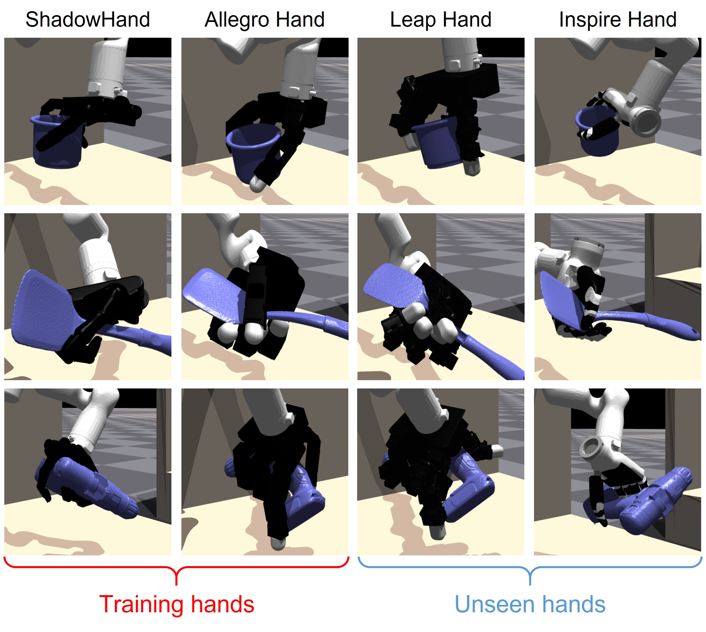
Cross-Embodiment Dexterous Grasping with Reinforcement Learning
{kind=link}
CrossDex is an RL-based method for cross-embodiment dexterous grasping. Inspired by human teleoperation, we propose universal eigengrasp actions, which are converted to actions of various dexterous hands through retargeting. CrossDex successfully controls various hand embodiments with a single policy, and effectively transfers to unseen embodiments through zero-shot generalization and finetuning.

Efficient Residual Learning with Mixture-of-Experts for Universal Dexterous Grasping
{kind=link}
ResDex, our RL-based framework for universal dexterous grasping, achieves SOTA performance on DexGraspNet. ResDex employs residual policy learning for efficient multi-task RL, equipped with a mixture of geometry-unaware base policies that enhances generalization and diversity in grasping styles. ResDex masters grasping 3200 objects within 12-hours' training on a single RTX 4090 GPU, achieving zero generalization gaps.
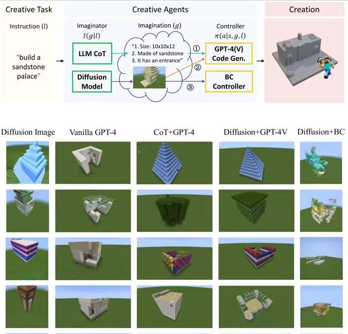
Creative Agents: Empowering Agents with Imagination for Creative Tasks
Creative tasks are challenging for open-ended agents, where the agent should give novel and diverse task solutions. We propose creative agents with the ability of imagination and introduce several variants in implementation. We benchmark creative tasks in the challenging open-world game Minecraft and propose novel evaluation metrics utilizing GPT-4V. Creative agents are the first AI agents accomplishing diverse building creation in Minecraft survival mode.

Pre-Trained Multi-Goal Transformers with Prompt Optimization for Efficient Online Adaptation
{kind=link}
Previous works in skill pre-training utilize offline, task-agnostic dataset to accelerate RL. However, these approaches still require substantial RL steps to learn a new task. We propose MGPO, a method that leverages the power of Transformer-based policies to model sequences of goals during offline pre-training, enabling efficient online adaptation through prompt optimization.
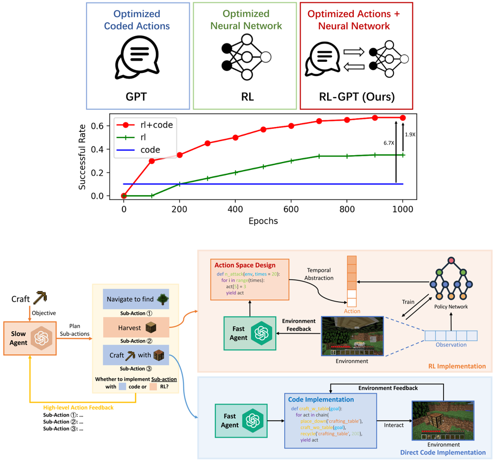
RL-GPT: Integrating Reinforcement Learning and Code-as-policy
{kind=link}
RL-GPT equips Large Language Models (LLMs) with Reinforcement Learning (RL) tools, empowering LLM agents to solve challenging tasks in complex, open-world environments. It has a hierarchical framework: a slow LLM agent plans subtasks and selects proper tools (RL or code-as-policy); a fast LLM agent instantiates RL training pipelines or generates code to learn subtasks. LLM agents can perform self-improvement via trial-and-error efficiently. RL-GPT shows great efficiency on solving diverse Minecraft tasks, obtaining Diamond at 8% success rate within 3M environment steps.

Pre-Training Goal-Based Models for Sample-Efficient Reinforcement Learning
PTGM pre-trains on task-agnostic datasets to accelerate learning downstream tasks with RL. The pre-trained models provide: 1. a low-level, goal-conditioned policy that can perform diverse short-term behaviors; 2. a discrete high-level action space consisting of clustered goals in the dataset; 3. a goal prior model that guides and stablize downstream RL to train the high-level policy. PTGM can extend to the complicated domain Minecraft with large datasets, showing great sample efficiency, task performance, interpretability, and generalization of the acquired low-level skills.
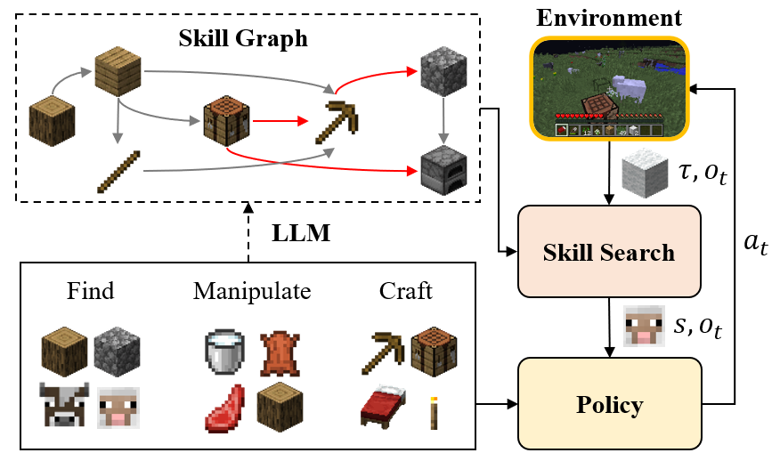
Plan4MC: Skill Reinforcement Learning and Planning for Open-World Minecraft Tasks
Plan4MC is a multi-task agent in the open world Minecraft, solving long-horizon tasks via planning over basic skills. It acquire three types of fine-grained basic skills through reinforcement learning without demonstrations. With a skill graph pre-generated by the Large Language Model, the skill search algorithm plans and interactively selects policies to solve complicated tasks. Plan4MC accomplishes 40 diverse tasks in Minecraft and unlocks Iron Pickaxe in the Tech Tree.

Robust Task Representations for Offline Meta-Reinforcement Learning via Contrastive Learning
Offline meta-RL is a data-efficient RL paradigm that learns from offline data to adapt to new tasks. We propose a contrastive learning framework for robust task representations in context-based offline meta-RL. Our method improves the adaptation performance on unseen tasks, especially when the context is out-of-distribution.
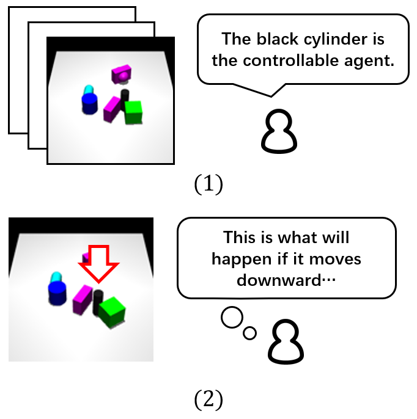
DMotion: Robotic Visuomotor Control with Unsupervised Forward Model Learned from Videos
We study learning world models from action-free videos. Our unsupervised learning method leverages spatial transformers to disentangle the motion of controllable agent, learns a forward model conditioned on the explicit representation of actions. Using a few samples labelled with true actions, our method achieves superior performance on video prediction and model predictive control tasks.
Preprints
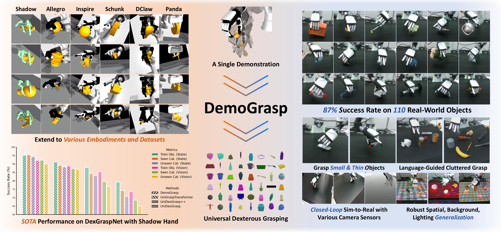
DemoGrasp: Universal Dexterous Grasping from a Single Demonstration
DemoGrasp is a simple yet effective method for universal dexterous grasping, formulating the problem as a one-step MDP of editing a single successful demonstration. It achieves a SOTA success rate of 95% on DexGraspNet objects with Shadow Hand and shows strong transferability to diverse dexterous hand embodiments and zero-shot generalization to unseen object datasets. On the real robot, the policy successfully grasps 110 unseen objects, including small, thin items. It generalizes to spatial, background, and lighting changes, supports both RGB and depth inputs, and extends to language-guided grasping in cluttered scenes.
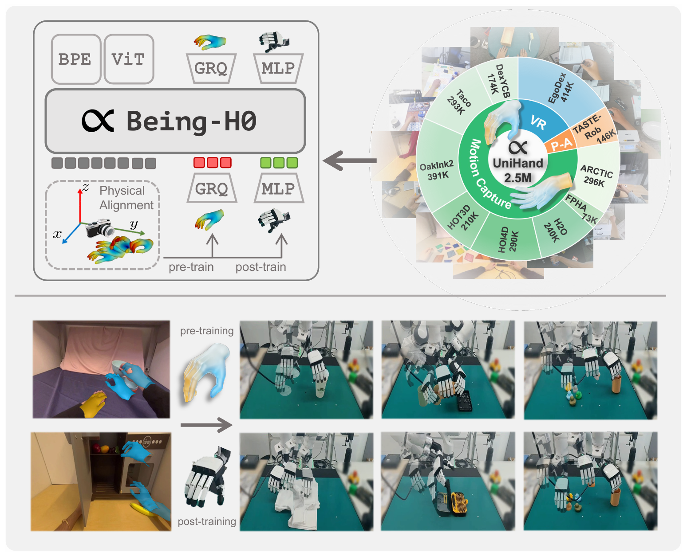
Being-H0: Vision-Language-Action Pretraining from Large-Scale Human Videos
We introduce Being-H0, the first dexterous Vision-Language-Action model pretrained from large-scale human videos. Being-H0 acquires dexterous manipulation skills from UniHand, the introduced large-scale dataset containing egocentric human videos, language, and hand motion annotations. By explicitly predicting human hand motions, the resulting foundation model seamlessly transfers to real-world robotic dexterous manipulation tasks.
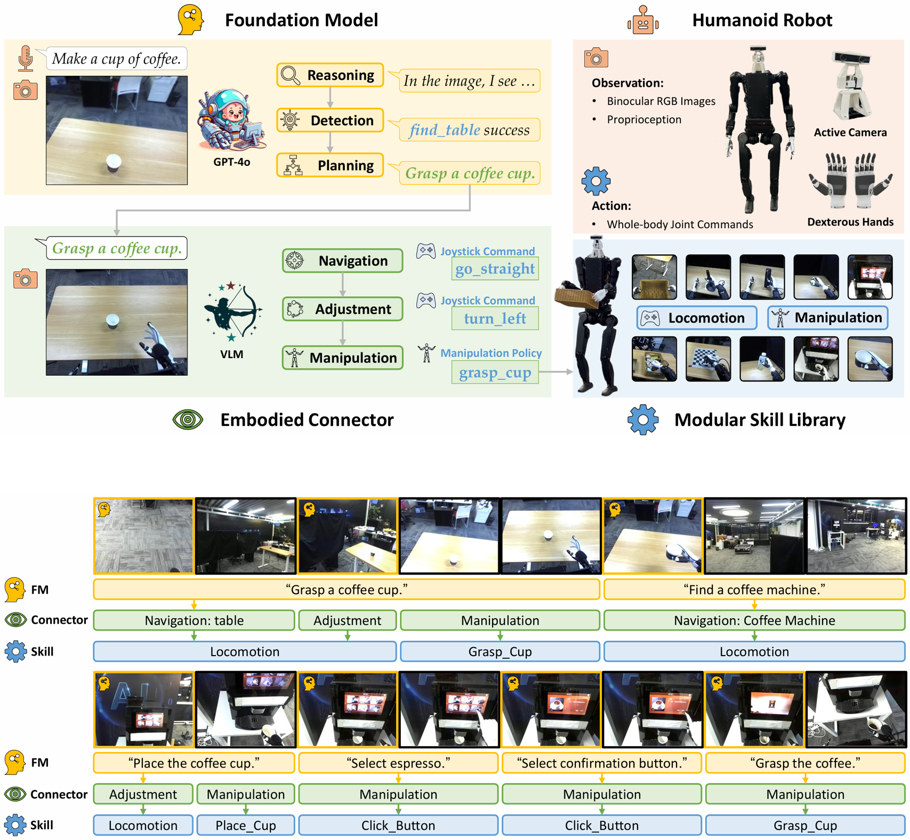
Being-0: A Humanoid Robotic Agent with Vision-Language Models and Modular Skills
Being-0 is a hierarchical agent framework for humanoid robots, with a novel Vision-Language Model module bridging the gap between the Foundation Model's language-based task plans and the execution of low-level skills. Being-0 is capable of controlling humanoid robots with multi-fingered dexterous hands and active cameras, enhancing their dexterity in both navigation and manipulation tasks, and solving complex, long-horizon embodied tasks in the real world.
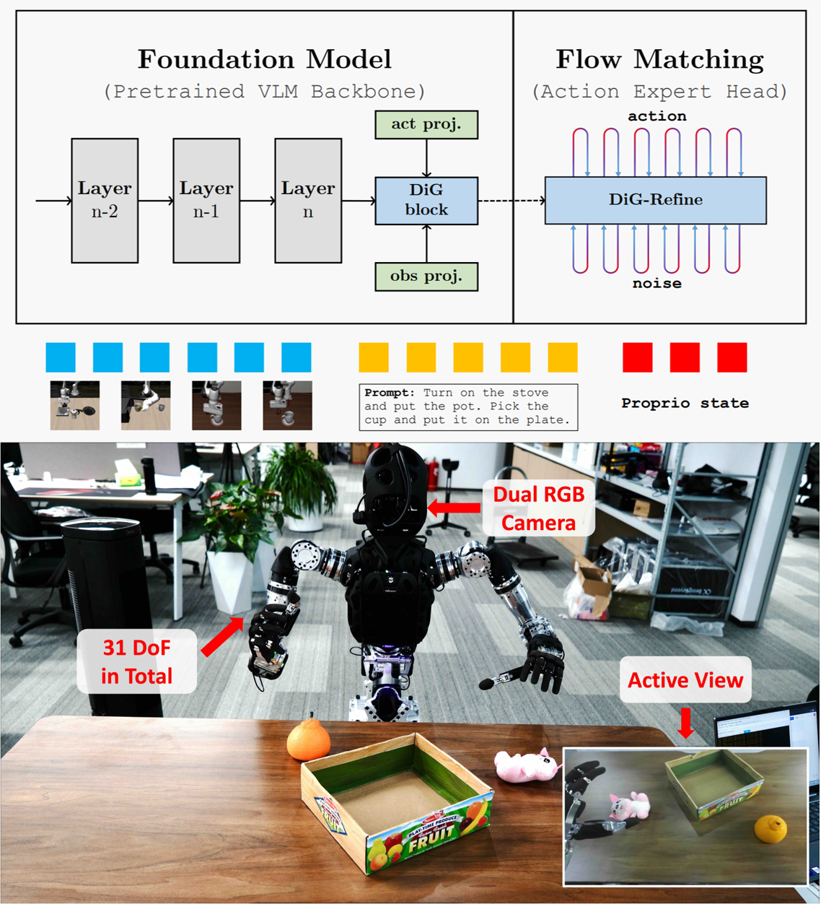
DiG-Flow: Discrepancy-Guided Flow Matching for Robust VLA Models
DiG-Flow enhances VLA robustness through geometric regularization. DiG-Flow computes a discrepancy measure between empirical distributions of observation and action embeddings, maps it to a modulation weight via a monotone function, and applies residual updates to the observation embeddings before flow matching. DiG-Flow integrates into existing VLA architectures with negligible overhead and consistently improves performance, with particularly pronounced gains on complex multi-step tasks and under limited training data.
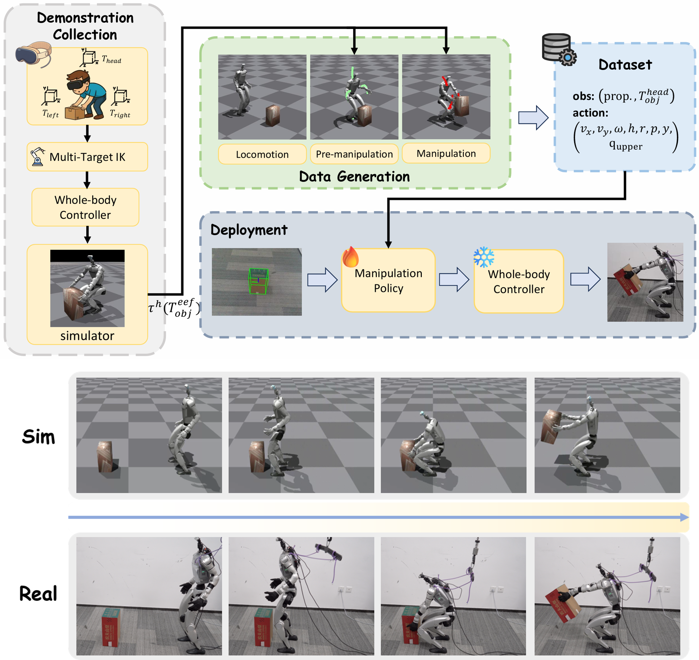
DemoHLM: From One Demonstration to Generalizable Humanoid Loco-Manipulation
DemoHLM is a framework for humanoid loco-manipulation that enables scalable data generation and policy learning for any object-centric tasks. For each task, DemoHLM requires only a single teleoperation demonstration in simulation and automatically synthesizes hundreds to thousands of successful trajectories that complete the same task in varied environments. The learned policies successfully complete ten tasks on a real Unitree G1 robot with grippers and an active RGB-D camera.
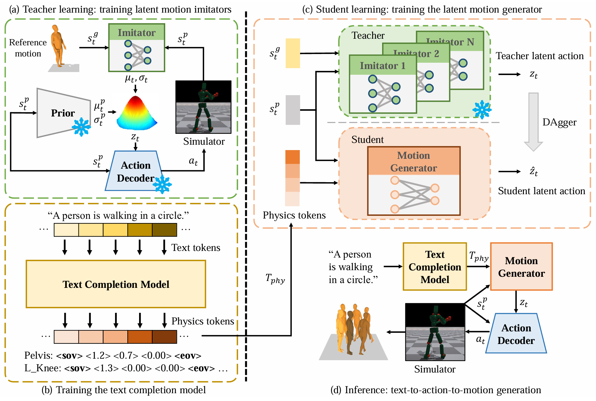
Actionable Human Motion Generation via Latent Imitation and Fine-Grained Text Completion
TAM (Text-to-Action-to-Motion) is a novel text2motion framework that can directly generate joint actions for simulated humanoids conditioned on text and convert to human motions via physics simulation. Extensive quantitative and qualitative results demonstrate that TAM achieves state-of-the-art motion generation quality while rigorously adhering to physical constraints.
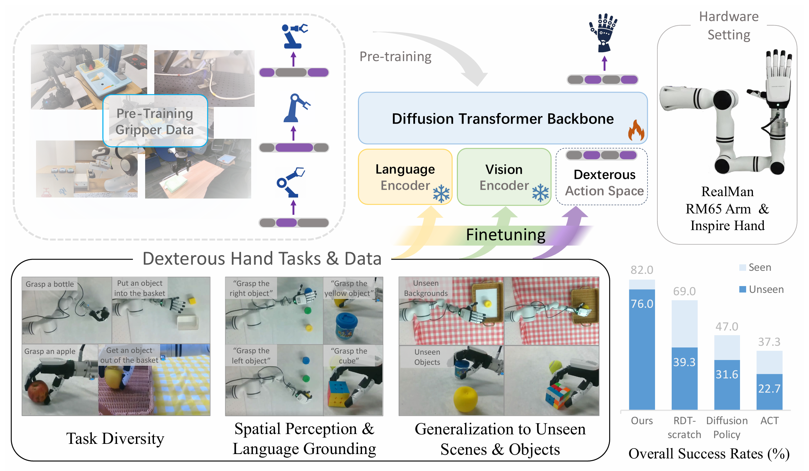
Data-Efficient Policy Learning for Dexterous Hands via Pre-Trained Vision-Language-Action Models
Data scarcity is a big challenge in policy learning for dexterous hands. We propose to use pre-trained Vision-Language-Action models (VLAs) of parallel grippers to enhance data-efficient imitation learning for dexterous hands. Our method successfully transfers both vision, language, and action knowledge of the VLA to the unseen embodiment of dexterous hand, achieving superior generalization compared with prior methods that mainly utilize vision pre-training.
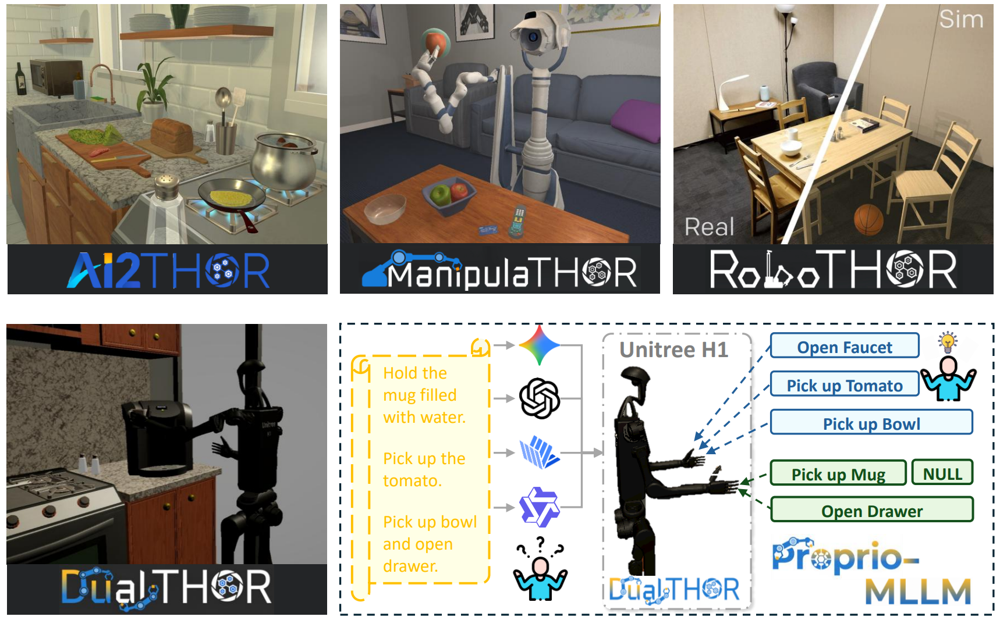
Towards Proprioception-Aware Embodied Planning for Dual-Arm Humanoid Robots
Proprio-MLLM enhances MLLM's embodiment awareness by incorporating proprioception with motion-based position embedding and a cross-spatial encoder. Experiments in our DualTHOR benchmark show that Proprio-MLLM achieves an improvement of 19.75% in embodied planning.
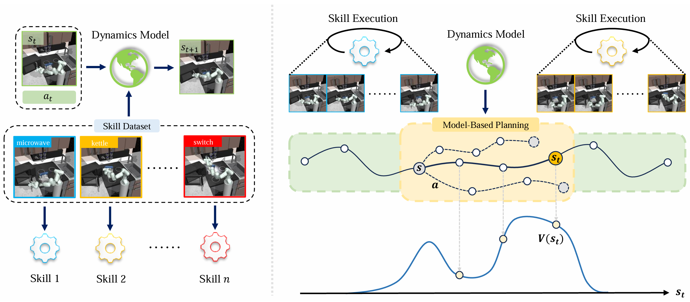
Offline Model-Based Skill Stitching
Given pre-trained short-term skills, how can we stitch them to solve long-horizon tasks accurately? We propose a data-efficient framework for offline, model-based skill stitching, enabling effective transitions between skills.
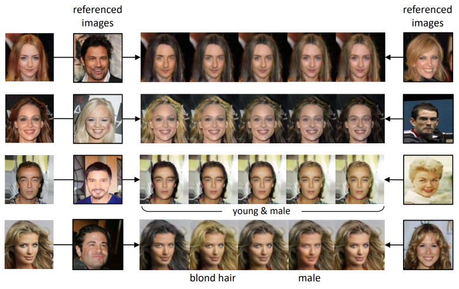
DLGAN: Disentangling Label-Specific Fine-Grained Features for Image Manipulation
The first work to utilize discrete multi-labels to control which features to be disentangled, and enable interpolation between two domains without using continuous labels. An end-to-end method to support image manipulation conditioned on both images and labels, enabling both smooth and immediate changes simultaneously.